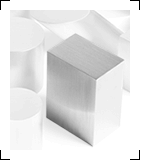

|
|||||||||||
|
|
support |
||||||||||
|

No tool is useful without documentation
and support. We work hard to keep the site
up-to-date with all information you need. Here, you can find
the Websh white paper and
the quick reference as well as
a list of frequently asked questions.
In addition, email support is available. Have a look at the Mailing Lists for more information on subscribing to Websh mailing lists. |
|
|
|
| description | documentation | support | resources | download | credits | copyright | |
|
|
|
| © Websh - an Apache Tcl project - part of the Apache Software Foundation | |